Marines
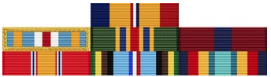
Ribbons & Awards
- Combat Action Ribbon
- Joint Meritorious Unit Award
- Navy Meritorious Unit Commendation
- Marine Corps Good Conduct
- National Defense Service Medal
- Armed Forces Expeditionary Medal
- Navy Sea Service Deployment
Training
Boot Camp
I was in boot-camp at MCRD San Diego from September to December in 1990.
In boot-camp my main concern was just getting through the massive mind-fuck. To that end I mostly blended in and tried to not attract the attention of the drill instructors. I remember imagining myself merging into whatever furniture I was standing next to, a bed or a footlocker.
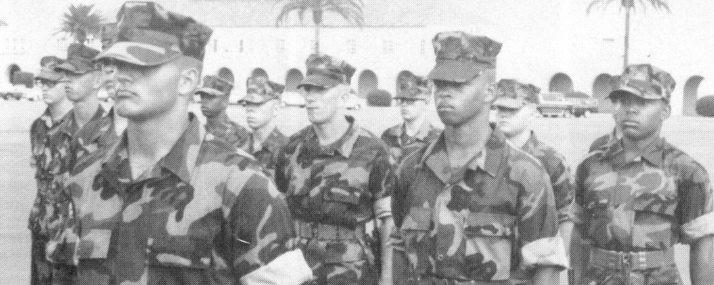
I must’ve had good hand-writing because the DIs made me a t-card recruit.
That means I would write out the days training on index cards for the drill
instructors so they could stick it in their smokey hat. You’d see them occasionally
refer to it during the day.
In second phase you go to the field. I remember when we were training the Secretary of Defense, Dick Cheney, was on a tour of Camp Pendleton and walked through our area.
I graduated boot-camp as a PFC because I helped recruit a couple high-school friends.
The recruiters in my home-town were from elsewhere and being Christmas it was a reasonable time for them to have vacation time. So, the Marines will let fresh recruits help out in the recruiter office. That meant that instead of getting a week back home after boot-camp I was able to get a few weeks. I had to wear my dress blues, show up at the office and spread the good news.
Marine Combat Training
Marine Combat Training at Camp Pendleton was a school after boot-camp that all Marines had to go to. Now only non-infantry Marines have to go to this school. It’s like a miniature infantry school. The Marines are big on everyone being a capable infantryman.
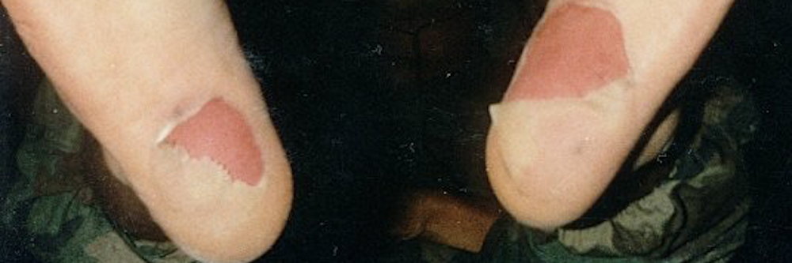
I fell in with Humping Hotel company. Humping is the word for long, forced marches. We marched a lot. At least once we marched over 20 miles with a full pack on. It’s hard to communicate the intensity of how those marches go if you’ve never done it.
If I have to point to when I got hard it was in MCT. The first Gulf War was heating up and everyone thought it was going to be a real fight so the instructors were especially hard on us. Some of them got a little too handsy and I believe there was an investigation resulting in at least one of them losing rank. None the less I am thankful for the training.
School of Infantry
I enlisted as guaranteed infantry. My primary MOS was 0311, infantry rifleman. When you think of a Marine this is probably the job you imagine most of them doing. The School of Infantry is where infantry Marines are trained.
SOI is right next door to MCT at Camp Pendleton. This was a longer school but it wasn’t quite as tough or maybe I was harder. About half-way through the school I picked up a squad leader role in SOI and got a meritorious promotion to Lance Corporal when I graduated SOI.
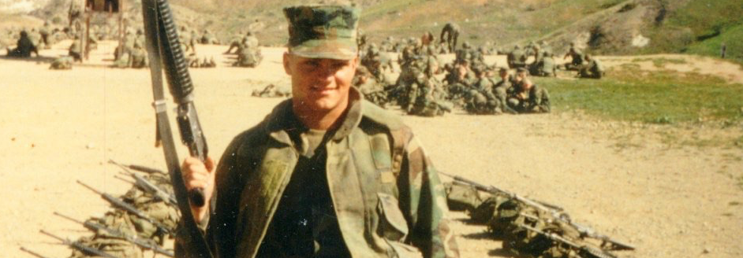
During this school the first Iraq War was in full swing. I remember some other Marines listening to George Bush Senior on the radio. He announced that our forces would not continue into Iraq and towards Baghdad. The war was pretty much over. There were more than a few Marines that were upset. Some of them had dropped out of college to get in on the fight.
Security Forces School
My secondary MOS was 8152, Security Force Guard. At the time on the West Coast you went to Mare Island Naval Shipyard in Vallejo, California to the Marine Corps Security Force School.
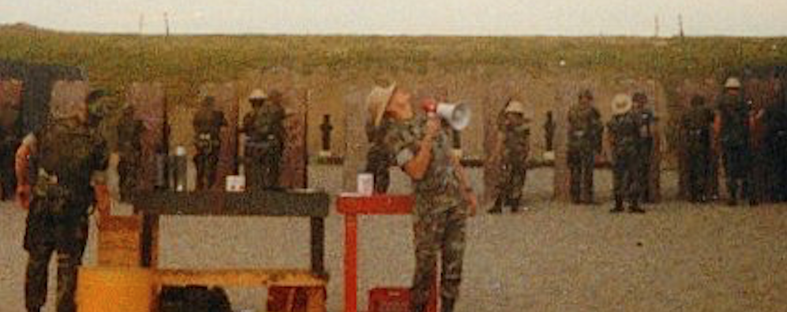
Security Forces School was primarily about gaining proficiency with the shotgun and the pistol. Most infantry Marines don’t use those weapons. We used the Mossberg 590 shotgun and the 1911 pistol even though the rest of the military was transitioning to 9mm Berettas. The instruction was good, especially for pistol they ran great drills that turned us into effective shooters.
Room clearing or urban combat was also a big focus. We practiced in shoot houses. We also did paint-ball training in a dry-docked Navy ship in nearby Vallejo.
We also focused on terrorism and counter-terrorism. Really just going through it’s history and motivation, common tactics, what to look out for and what to do if you find yourself in a situation.
Marine Corps Security Forces NAS Alameda
It’s worth backing up and explaining how the Marines do Security Forces. If you get into that job you’re first trained as an infantryman, then you’re trained as a security guard. Then in the first half of your enlistment you work as a security guard. I think it’s because you get those Marines fresh out of boot-camp. They’re not salty and surly. They’re highly disciplined, they haven’t been in the fleet and they are very respectful of authority. The mission is usually important and they want some locked-in Marines.
My first duty station was the Marine Security Forces at Naval Air Station, Alameda, California. This is the unit that I most identify with. I met a lot of great Marines. Our primary guard duty was in a location that gave you views of San Francisco across the bay.
If you have ever watched the show Myth Busters if they have something that needs a big area they go over to the runway next to where we worked. The base has long been de-commissioned.
While at Alameda we did an annual training trip to Fort Ord, California. The idea was that we shouldn’t forget about our infantry skills. We used MILES gear. One thing I came to appreciate from this training was the importance of bringing gun-oil to the field. For whatever reason we didn’t bring any and our automatic rifles were too dry to cycle a round. So we’d have to pull the charging hammer for every shot.
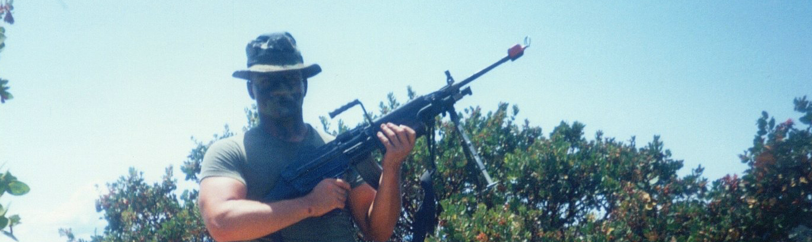
49ers Game
Typically they would ask for volunteers without telling you what it was for. One time I volunteered and I expected it to be for a funeral but it happened to be doing colors for a 49ers football game. It was fun, got to watch the game after the opening ceremony. I wasn’t nervous, there were too many people to be nervous.
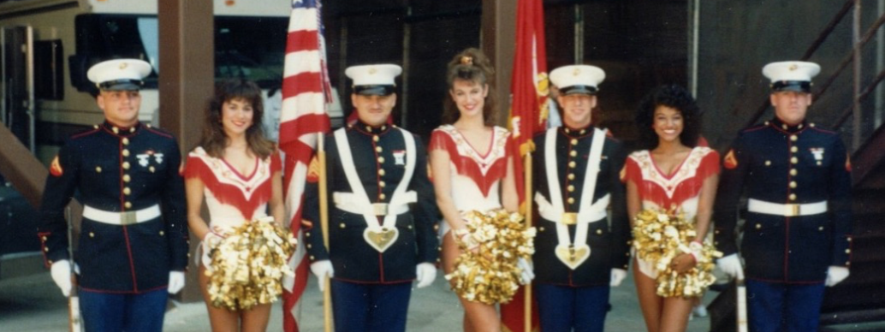
Abraham Lincoln
Another time I volunteered it ended up being an odd duty where a few of us joined the Abraham Lincoln aircraft carrier down to Los Angeles. I have no idea why there was a need for that. Perhaps the Lincoln was short a few Marines so they pulled us.
If a sailor is wounded and needs to be carried aboard the ship it is the Marines that do stretcher duty. Makes sense, Marines are generally in better shape. When we were pulling into Long Beach all the other Marines were manning the rails to put on a show. Since we weren’t taking part in that we were pulled to do stretcher duty for an actual situation. Below the flight deck is another huge hangar space with elevators that go down a few stories. A sailor fell over one of those and was seriously injured. I don’t even recall if he survived, it’s odd, maybe I was even in shock because you’d think I’d remember that. I do recall pieces of bone and whatnot.
When we pulled into port they had some entertainment lined up for us. About a dozen of us went over to watch the filming of an episode of Major Dad the TV show in the 90s with Gerald McRaney. It was an odd little situation to find yourself in. From there we somehow ended up in the most epic night of house-partying I have ever been a part of. We were on a block that had 3 different parties going on. That outing culminated in the stereotypical race to the base to make it on-board before the ship left port.
While on the Lincoln I ran into a guy from Illinois from a neighboring town. He was in the Navy and his job was to get video of planes taking off and landing. Not sure how you get that job.
3rd Light Armored Infantry Battalion
After NAS Alameda I was sent to an light armored vehicle unit. LAVs have 4 wheels on each side, they can take direct small-arms fire but an RPG would turn them into an aluminum coffin. Most models have a 25mm gun turret on top sort of like a tank. LAVs could hold four infantry Marines which in that context we’d call scouts.
I was on leave between commands for a while. I saw on the news how SEALs and recon Marines were landing on the beach illuminated by news cameras. The anarchy in Somalia made for something of a humanitarian crisis and President Bush sent in the military.
Before Deployment
When I showed up to the unit I was all Billy bad-ass and told the First Sergeant I would like to go to Somalia. He laughed and said I didn’t have any choice in the matter and I was going to the company that was due to ship to Somalia.
I got introduced to my new unit. I fit in well but I was a little nervous about being the new guy in a unit that was on it’s way to an actual situation. For me at least going from security forces to an LAV unit was night and day. They were much more laid back than what I was used to. They talked to officers the way wouldn’t even think of talking to junior NCOs.
Typical of the military there was a lot of hurry-up and wait. There were a lot of false alarms where they’d call us in, make sure we had all of our gear to deploy but ultimately we were told it wasn’t time yet. After a few times of this we actually went for real.
Mogadishu Airport
One of the coolest things about being deployed was seeing logistically how they pull it off. A commercial plane was chartered for us. We flew from California to probably Dover, Deleware. From there we went to Rammstein in Germany. Then we landed in Cairo, it was cool looking out the window and seeing all the arabic writing. I gotta say I was a little alarmed to know that Egyptians were re-fueling and maintaining a plane full of over a hundreds US Marines. From Cairo we flew to Mogadishu, Somalia. We get off the plane with our personal rifles and the first thing they do is issue us our ammunition.
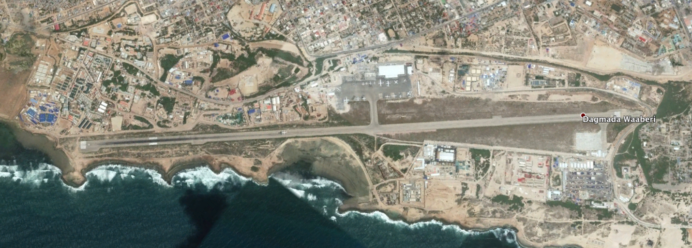
Next we set up GP tents at the end of the run-way in Somalia. We were there for a few days. Planes kept taking off and landing, sending dust everywhere. That’s when I decided to just shave my head clean.
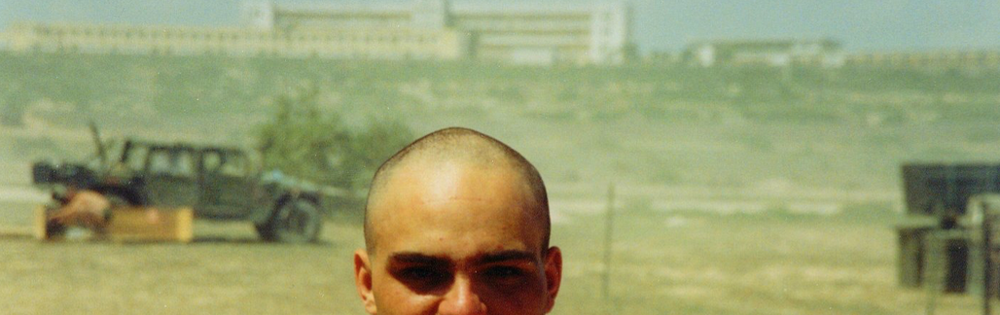
The military keeps vehicles and supplies on boats in the ocean all over the world. Not long after our arrival these supplies arrived. We finally were able to do some missions. Initially I was surprised by how green Somalia was.
Mogadishu Stadium
After a while we moved to a soccer stadium further into town. When we showed up we set up cots in the exposed outer walkway around the stadium. The first order of business was to fortify that walkway with sandbags. It was just in time because a few days after we did that, we started to receive fire.
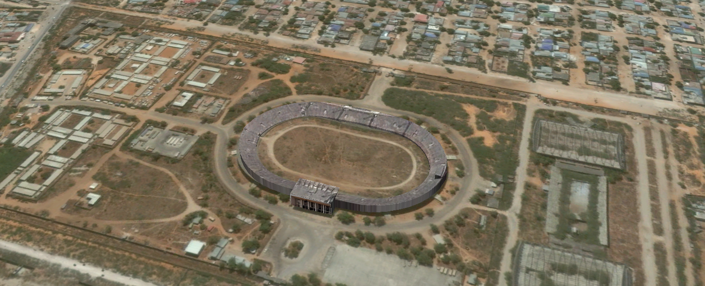
At one point I was next to a water buffalo (a big tank with lots of clean water). I was takind a field-bath where you use a cut up water-bottle, a wash-cloth and a bar of soap and figure out how to get yourself cleaned up without offending on-lookers. We started taking fire and I saw rounds impact nearby. In the confusion my rifle got mixed up with someone else’s. I zigged and zagged enough to make it to some cover without any new holes in my body. It’s interesting how in the moment fear wasn’t an issue. It was all training and doing what needs to be done. By the time I found cover I made sure the rifle was good to operate but the bolt was full of sand. When things settled down I was able to find the rightful owner and get my rifle back. We had perimeter guys that were responsible for returning fire in that situation.
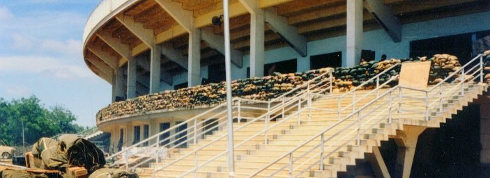
I remember we had intel that said there were Arab fighters that might be operating in Somalia. There was a warning that they were going to take some shots at Americans. Not long after we came under heavy sniper fire in the stadium. I think these are the guys that later played a role in Black Hawk Down and were probably elements of what would become Al Queda.
Bardera
They took enough Marines to operate and drive LAVs and had them drive out to the town of Bardera. The rest of us flew from Mogadishu airport to a dirt strip in Bardera to meet up with the equipment. We formed a loose perimeter around the air strip. We didn’t have actual tents so we rigged up a collection of ponchos and tent-halves to keep the Sun off of us. We didn’t even have cots yet so we slept on crates of water and MREs.
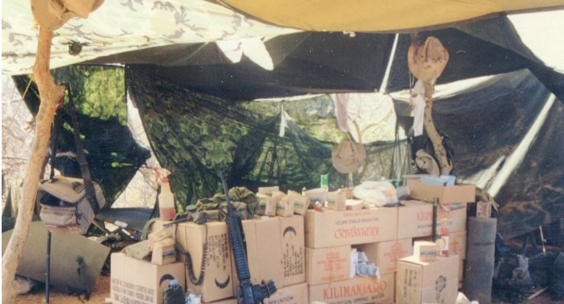
We went on missions similar to what we did in Mogadishu. We guarded food convoys and made sure that food was safely distributed to people that needed it. It seemed that we didn’t need to do as much as we did in Somalia.
Perhaps for that reason they found other work for us. The NGOs that worked in Bardera asked if we could provide some security for them at night. I happened to be one of the few Marines with a Humvee license and we used Hummers to get to their NGO compounds. Consequently I went on a lot of the missions to guard NGOs. It was a great distraction from the monotony. Frankly it was nice to talk to people that weren’t Marines. There were a lot of well meaning westerners working for the ICRC and Doctors without Borders. We also ate well, one of the ICRC guys that ran the compound found a local Somalian that knew how to cook Italian very well. Somalia was at one point controlled by Italy. He made a fish dinner that was awesome and I don’t like fish.
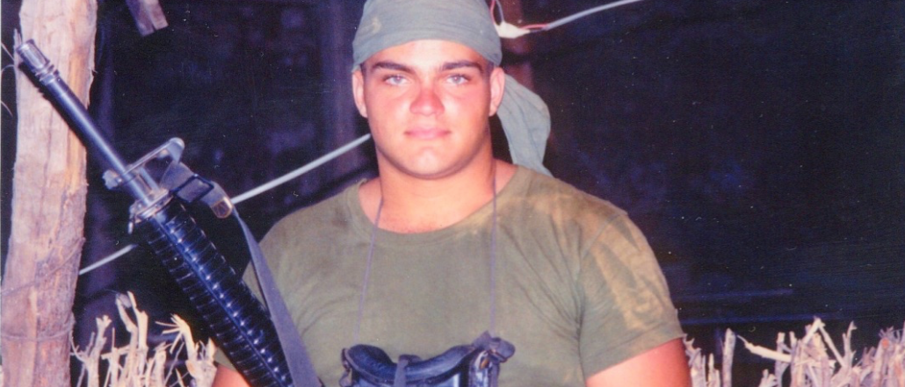
There were some Army Special Forces guys in the area doing the same type of work. Sometimes we’d share the compound with them. They were professional guys. It was interesting to see how they operated differently, they were more independent and kind of loose I guess you’d say. But that’s their deal, they blend in and work with civilians well.
While we were out in the middle of nowhere we were visited by Clint Black and Charleton Heston doing the USO thing. I respect any entertainer that does this, it’s a very cool thing.
Back to the Stadium
We spent some additional time back in Mogadishu before heading back to the states. Things were relatively calm. Other United Nations forces were coming in to relieve us as well as the US Army. There were a lot of Pakistanis at the stadium. When Pakistanis walk they hold hands together, we thought that was interesting. Our water purification guys had huge bladders full of potable water. I’m not sure if it was canvas or rubber. Well some Pakistanis thought it’d make a fine bath-tub.
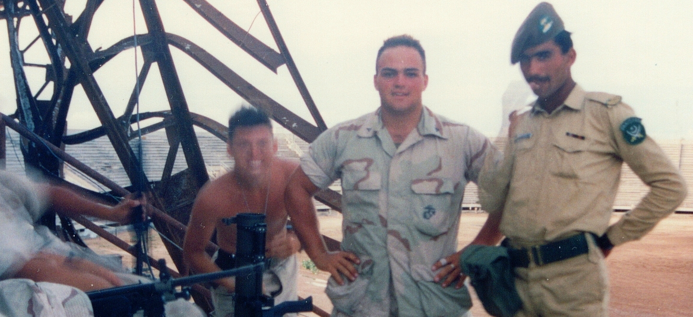
While we were there we made an effort to establish relationships and make friends with people that wanted to do good things. I think we were good at earning trust and making little kids laugh. As we were leaving the locals seemed unsure of the troops that were relieving us.
While we were cleaning our LAVs so they could be returned to their floating caches in the ocean I ran into one of the high-school buddies I went to boot-camp with. He was into water purification. It’s a small world.
Black Hawk Down
I was out of Somalia when the events of Black Hawk Down happened. When the Marines were there we had tanks, amphibious assault vehicles and LAVs that were always at the ready just in case anyone needed help in town. The Army had none of that. I’m not sure how high that decision was made.
Also, when the Marines controlled the stadium we did all our own menial tasks. When the Army took over they hired locals to do things like laundry. This seems bad for OPSEC but I’m not sure if it factored into the debacle that took place.
As we were sitting at the airport, salty dogs that we were I remember seeing some high-level operators show up with their HK MP5s. I guess they would’ve been Delta.
Back to the States
I picked up Corporal when we got back from Somalia. I had done quite a handful of college courses and kept my nose clean so I think I picked it up a little early.
Knowing I was on my way out of the Marines I deliberately wanted to de-militarize myself. I volunteered to work in the intelligence office and since I already had a clearance from the security forces job it was easy for me to get into.
Classified Material Control Center NCO
My job every morning was to walk over to a location on base that handled intelligence reports, get those reports on floppy disk, put them in a brief-case and then walk them back to my battalion headquarters. There I would print out the reports, read through them and make them available for officers and our intelligence NCO to look at.
It was a good gig, low stress. We were in an area with lots of classified material so not just anyone could come in and harass us. I also had to destroy older reports. Sometimes if the intel guy wasn’t around I’d brief an officer on some of the more important intel. Reading those reports was very interesting I could see how that would be a fun career. I can appreciate how military and intelligence types can have the thought that we are a few steps away from the shit going down at any minute.
End of Active Service
Being in the intel office and near the admin section I started reading through some rules about how you can get out of the service a little early. If you are elected to public office (I forget how high it has to be) they’ll let you out. If you win the lottery (I’m unsure of the dollar amount) you can split. Then I found that if you are going to college and you getting out a little early will let you start your semester at school they’ll let you out a few months before you were supposed to get out. So that’s what I did, I was able to get out a 3 months earlier than I should have. It made sense, I was enough of a short-timer that I wasn’t going on any other deployments and I was ready.